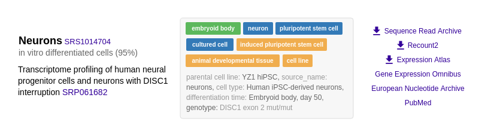
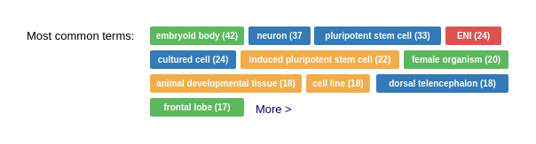
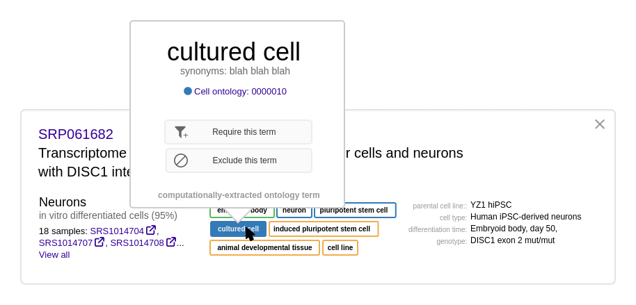
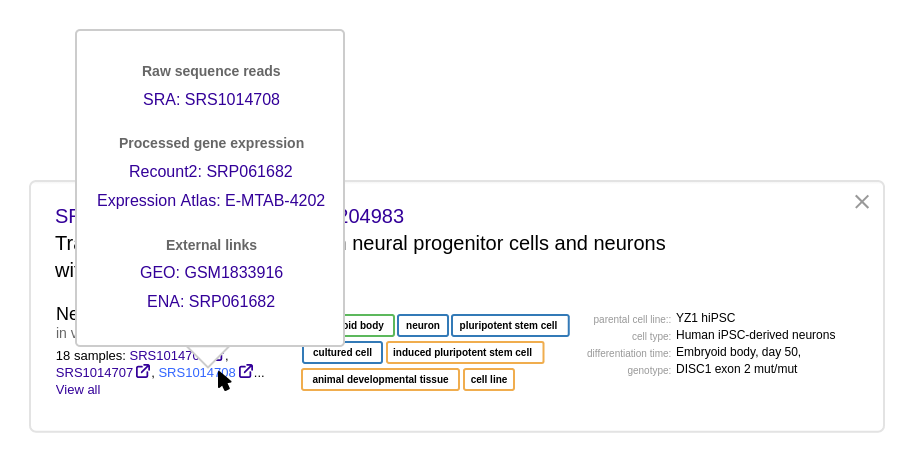

autocomplete - color coded
Sometimes the same term appears in different ontologies. One way to cope with this is to keep them all separate, and show them as different terms, maybe with color-coding to distinguish between different ontologies. This might be a usability headache though - the user might not know which ontology to pick? But merging the terms might create a lot of complexity also.
query builder
Because ontology terms are not uniquely identifiable by the actual text, it's probably a good idea to use discrete tags to represent query terms instead of free text. When you select an item via the autocomplete, it adds a tag, similar to entering email addresses in Gmail.
This shows one way to allow OR's in boolean queries while avoiding the complexity of nesting.
ontology term tags
Could we use only one search box, and let users click on and off terms to requrire/exclude them?
This seems tricky to me because we need to visually distinguish between 2 behaviors: deleting the search term, and excluding samples matching this search term (a NOT search.)
(This idea borrowed from the ENCODE search https://www.encodeproject.org/search/?searchTerm=stem+cell )
sample type filter 2
Something like this is cleaner if we have more fields to filter by
examples
Showing some good examples on the home page could be really helpful for making our first impression and explaining to the user how to use the tool.
This 2-line description wouldn't be appropriate if we decide we're only targeting bioinformaticists, but something as simple as this might be good if we're also targeting less-technical users.
The visual hierarchy of the page needs a lot of work - the colored examples shout too loudly.
result row 1
I want to take the results table in this direction, but I'm afraid this is a little too minimal - not everything is self-explainatory. (It's probably not clear that the 95% is the confidence for example.)
Other things we might want to show, not included in this mock:
+ ID's to other databases: biosample, GEO ID's for experiments, European Nucleotide Archive (same ID's as SRA)
+ metadata from experiments for RNA seq: bulk vs single cell, type of RNA (mrna, +sRNA, long noncoding RNA, total RNA), -- the user will likely want to filter on these
What do we show if a sample has 2 associated experiments, show 2 rows?
Should we group together samples that share the same set of studies and ontology terms? How many of these are there?
result row 1 - data download popover
Will it be cumbersome to the workflow to hide the external links behind the button? It helps with clutter, but a lot of people will be using this functionality pretty frequently.
I'm not sure if people will expect to look here for the external links.
Can we link directly to the paper on PubMed or PMC?
result row 1 - expanded links

Trying to use the download icon to show that these links have downloadable data - not sure if this will make sense to users.
common terms

Doing something like this, it would probably be most useful to sort the terms by something like information gain instead of just highest number of occurrances? Will we have a long tail - a lot of terms with only 1 or 2 occurrences?
result row 2
Group results by study and by same name/attributes. (Show all of the samples as a single row only if sample name and key-value attributes are identical.)
A design like this should hopefully solve the annoying problem of pages and pages of similar/identical samples in search results. Also accessing info the study itself seems to be an important part of the filtering/validation step, and this design puts more emphasis on the study.
Tries to gracefully handle all of these cases:
1) Many studies with same name and attributes
2) Many studies with same name but different attributes
3) Many studies with same attributes but different names
4) Many many pairs of names+attributes for a single study
5) Ommitted study names
Potential annoying/challenging problem: when you click "see all matching samples for this project," there might be a zillion samples and we need to handle that gracefully. Also there might be a zillion samples for a single combination of study/samplename/attributes.
Includes X button to remove this study from the search results - possible feature to add later.
result row 2 - ontology term popover

Trying to use the popover to clearly communicate that this is a computationally-extracted ontology term, avoiding additional clutter in the results display.
We could show synonyms here and maybe other info about the term. We could show or link to a definition?
result row 2 - sample popover

Get to data and SRA page via a popover after clicking the sample ID.
This might be annoying and too many clicks to get to the data, but right now I'm struggling to cram this into the result-row interface.